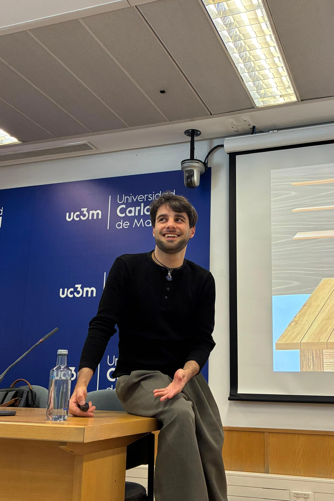
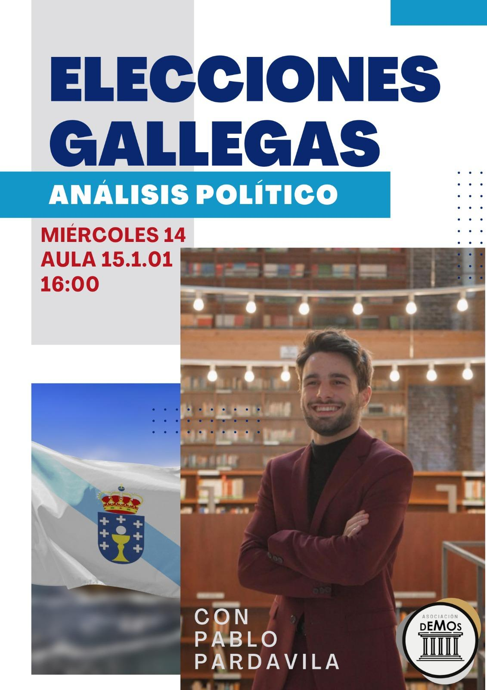
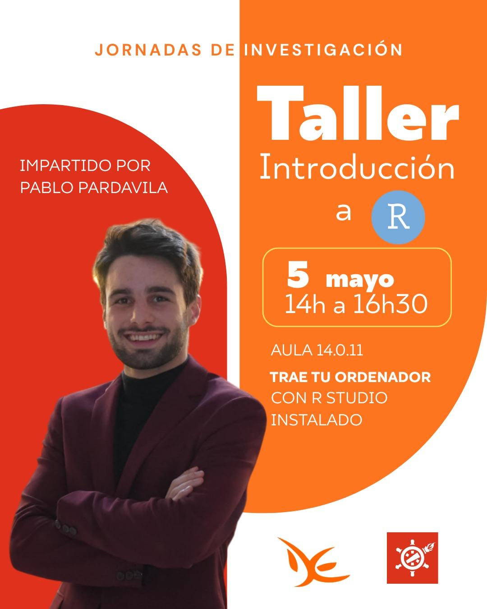

Hello! I am a Ph. D. researcher at
University Carlos III of Madrid.
I am currently researching the individual drivers of support for undemocratic practices under the supervision of Simon Chauchard.
Welcome to my webpage!
Curriculum Vitae
Universidad Carlos III de Madrid
Supervisor: Simon Chauchard
Juan Linz Institute (UC3M)
Universidad Carlos III de Madrid
Predoctoral Researcher, UC3M.
PI: Simon Chauchard
Funding: Agencia Estatal de Investigación (Spanish Government) - ATRAE Project
Academic Work
Here you can find my research in progress.
Book Chapter (under review)
Working paper
I show how support communities drive terrorist recruitment by analyzing Basque municipal-level data for the case of ETA.
RESEARCH, LEARN, AND SHARE
I love researching and learning through research, but if there's something I'm even more passionate about, it's sharing all that knowledge. Whether through podcasts, talks, or seminars, spreading science is a passion of mine.

